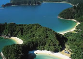
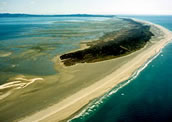

Abel Tasman and Golden Bay
New Zealand's smallest National Park, the Abel Tasman is simply a slice of heaven to visit. With subtropical weather, turquoise waters, sheltered inlets and secluded beaches of golden sand; there are few places on earth that surpass the beauty of this area.
The Abel Tasman track is a popular 51 km walkway along the coast that takes you through pleasant bush and along side the bays giving you many opportunities to have a dip. There are picturesque areas dotted along the track for you to pitch your tent - however you must pay a camping fee to DOC before you leave.
About Golden Bay
Golden bay is a long bay laden with sun drenched golden sand. The best way to explore the area is by car as other transport is limited. Farewell Spit, at the the most northern point of the region, is a must see. The Spit is New Zealand's longest sandspit system, extending eastward in the Tasman Sea for approximately 30 km, but sheltered to the south with tidal mudflats extending up to 6 km seaward at low tide. The spit is host to over 90 bird species including the Black Swan, Australasian Gannet, Caspian Tern, Southern Black-backed Gull, Red-billed Gull and Variable Oystercatcher.